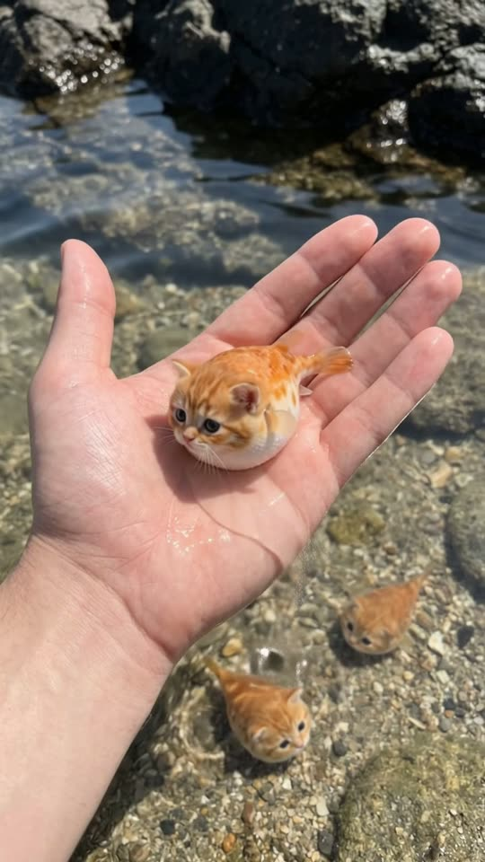
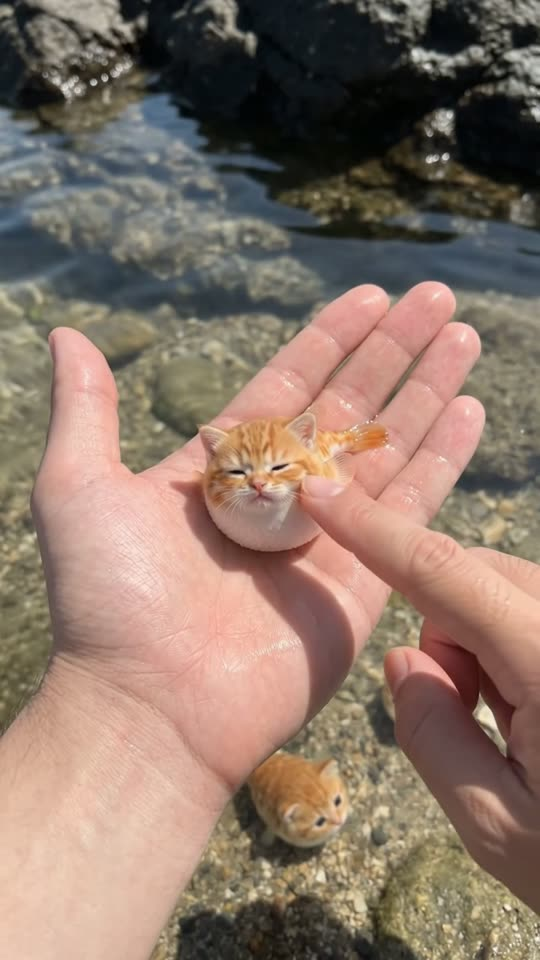
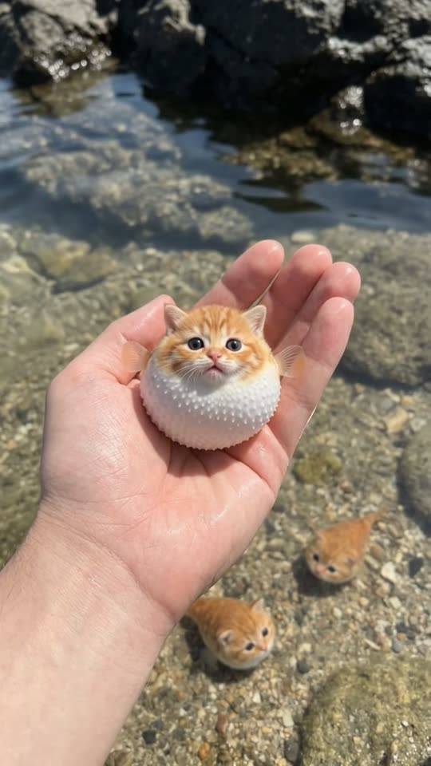
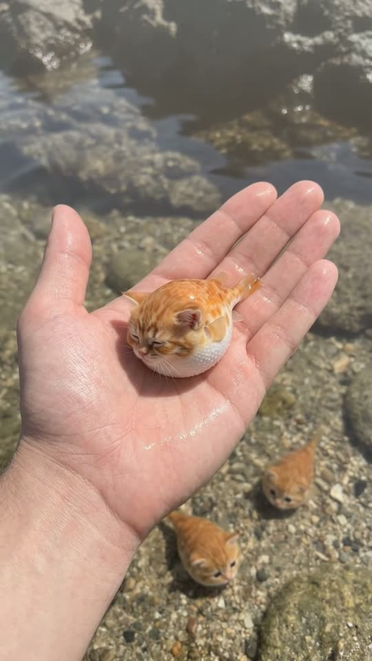

Free prompt pack
Poke the belly.Full puff.
A tiny fish with a kitten's face sits in a wet palm at the edge of a rock pool. One poke in the belly and he puffs into a spiky ball. Then he lets the air out slowly, sighs a little seawater and falls asleep. One still image and one prompt, in one take.
Both prompts, in the order I ran them. Drag down on the puffer to squeeze the air out and reveal each prompt. Tap the pool and the little ones come to see.
The first frame
Already in the palm, face up. This image is frame one: a wet hand lifting a walnut-sized fish with an orange kitten's face out of a clear rock pool, two more of them on the sandy bottom below.
Watch out
The original spends four seconds fishing it out. Start with it already in the palm and the image fixes the face, which is the whole reason anyone watches.

The prompt 133 words
Real close-up photo looking down at a pale wet left hand lifting, palm up, just out of shallow crystal-clear water at a rocky shore on a sunny day. In the palm sits a tiny creature the size of a walnut, half kitten, half pufferfish: the round face of an orange tabby kitten with faint darker stripes on the forehead, small rounded ears, big glossy black eyes, a tiny pink nose and a white muzzle, on a smooth chubby fish body, orange on top and creamy white underneath, two small translucent orange fins behind its cheeks and a short fan-shaped tail fin, all wet and glistening. Water streams off the fingers. Below, two more of them rest on the sandy bottom among small pebbles; dark rocks reflect at the top. Natural colour, sharp detail.
Poke, puff, sigh
Ten seconds, looking down at your own palm. Add the image as the reference, set 10 s, 9:16, 720p and audio on, and paste the prompt whole.
- 0–3 sin the palm
- 3–4 sthe poke
- 4–7 sfull puff, then down
- 7–10 sthe sigh
Watch out
Say the puff is a swelling over one second, never a pop, and that it keeps the same face, only rounder. Otherwise the model swaps the creature mid-puff.
Fragments



The prompt 998 words
FORMAT Real handheld close-up video filmed by the person whose hands are in the frame, looking down at their own palm, seen as the finished exported video file: the full picture edge to edge, nothing on top of it. Whatever records the picture is never in frame. One continuous take in real time, no cuts. Vertical frame. The video runs at 24 fps. No frame is repeated. Real time, 1x speed, never slow motion. SCENE At a rocky shore, someone lifts a tiny kitten-faced pufferfish out of the shallow water in their palm. They poke its belly with one finger; it puffs up into a round ball, holds it for a moment, slowly deflates, then closes its eyes and lets out a fine spray of water, like a sigh, and relaxes in the hand. The hand is already lifting it out of the water in the first frame. The take ends with the creature resting in the palm, eyes closed. REFERENCE IMAGE Use it for the creature, the hand, the water, the sand, the pebbles, the rocks and the light. Everything matches it exactly, zero drift, no smoothing. The movement is described below. THE CREATURE One tiny creature the size of a walnut, half kitten, half pufferfish: the round face of an orange tabby kitten with faint darker stripes on the forehead, small rounded ears, big glossy black eyes, a tiny pink nose and a white muzzle, on a smooth chubby fish body, orange on top and creamy white underneath, two small translucent orange fins behind its cheeks and a short fan-shaped tail fin, wet and glistening. Puffed up, it becomes a round ball the size of a tangerine, orange on top and cream underneath, its fins sticking out at the sides and its face stretched round, the same face. It looks and moves like a real living animal: blinking, fins fluttering, breathing; never a plush toy, never a cartoon, never CGI. The same creature in every frame. THE HANDS A pale left hand, palm up, holds the creature in the middle of the frame the whole time, wet, fingers slightly curled. From 1.5 s, the index finger of a pale right hand comes in from frame-right. No other part of the person is ever seen. LOCATION MAP We look straight down at the left palm, 35 cm away, held just above shallow crystal-clear water at a rocky shore. Below the hand, sand and small pebbles under a few centimetres of water, two more tiny creatures resting on the bottom; dark rocks reflect in the water at the top of the frame. Sunny daylight. FIRST FRAME The left hand palm up at x 10-80%, y 35-95%, water streaming off its fingers; the creature in the middle of the palm at x 38-58%, y 48-62%, facing us; two more creatures on the sandy bottom below at x 15-30%, y 18-28% and x 70-82%, y 22-30%; the reflected rocks at y 0-12%. Instant read: a tiny cat-faced fish in someone's hand. No delayed reveal. CAMERA Handheld, looking down at the palm, steady: only the slightest natural sway. It stays on the creature from the first frame to the last. It never cuts, never zooms, never pans away, never shows the person's face or body. ACTION TIMING 0–1.5 s — The hand rises the last few centimetres out of the water; water streams off the fingers and drips; the creature shakes its little fins and blinks up at us. 1.5–3.0 s — It sits in the palm looking up at us, fins fluttering; the right index finger comes in from frame-right. 3.0–4.0 s — The fingertip pokes its white belly once, gently. 4.0–5.0 s — It puffs up into a round ball the size of a tangerine, its eyes wide, its fins sticking straight out at the sides; the palm cups to hold it. 5.0–7.0 s — It holds the round shape for a moment, then slowly deflates back into a soft chubby shape in the cupped palm. 7.0–8.5 s — It closes its eyes and lets out a fine spray of water from its mouth, like a sigh; small droplets sparkle in the sun and fall onto the palm. 8.5–10 s — It relaxes in the palm, eyes closed, sides gently rising and falling. Hold to the last frame. PHYSICS AND SCALE Real size: the creature is about 4 cm long, puffed up about 7 cm across; the hand is an adult hand. The puffing is a smooth swelling of its body over one second, never a pop; the deflating is slower. Water drips off the hand and falls straight down. One creature in the hand, two on the bottom. Nothing morphs except the puffing and deflating of its body. NO FULL-FRAME EVENTS Nothing fills the frame: the spray of water is a fine mist around its face only; the palm, the creature and the water below stay visible in every frame. LIGHTING Bright sunny daylight from above and behind; glistening highlights on the wet hand and the creature; clear water with sunlight ripples on the sand. AUDIO No music, no score, no narration, no subtitles. Gentle lapping water, drips from the fingers, a tiny squeak when the finger pokes its belly, a soft puff as it swells, a slow hiss as it deflates, a little spray sound at the sigh. No words. LOOK Real handheld close-up footage, seen as the finished exported file: shallow depth of field, crisp detail, natural colour, light compression, no colour grade, no film grain, no lens flare, no slow motion, never CGI, never a cartoon. No camera app interface: no shutter button, no gallery thumbnail, no record button, no icons, no timer, no recording dot, no frame lines. POSITIVE LOCKS One creature in the hand, the same one all take. Only the hands of one person. No captions, no subtitles, no on-screen text, no watermark, no logos, nothing on top of the picture. ONE CREATURE. NO CUTS. NO ZOOM. NO SLOW MOTION. NO MUSIC.
Rule 01
Cut the fishing
Fifteen seconds of original becomes ten by starting in the palm. Keep the poke, the puff and the sigh, drop the wait.
Rule 02
Weird, but alive
A made-up animal only works if it moves like a real one: blinking, fins fluttering, breathing. Write the behaviour, not the species.
Rule 03
Small spray, small frame
Keep the water to a fine sigh around the face. A big splash fills the frame and hands the model a place to cut.
That's the whole build
Now go findyour own tiny weird thing.
If yours works, send it over. I read every DM and the good ones end up on the account.
@martiiifons